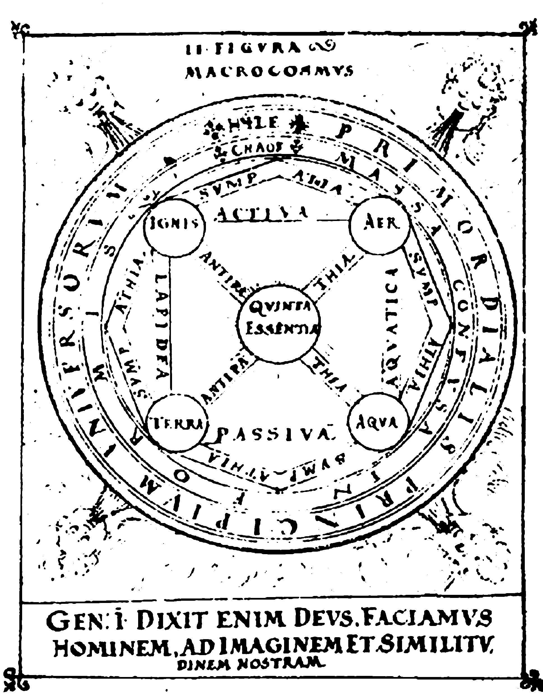

Philosophy and Spirituality
The number 5 holds significance in philosophy and spirituality, transcending its practical applications to become a symbol of transformation, freedom, and balance. Rooted in ancient traditions and universal human experiences, the number 5 embodies the dynamic interplay between the material and the spiritual, the known and the unknown. Philosophers and spiritual thinkers alike have explored its meanings, highlighting its role in the journey of self-discovery, enlightenment, and the pursuit of higher understanding.
Symbolism in Philosophy
In philosophical discourse, the number 5 is viewed as a symbol of freedom and transformation. Philosophers have interpreted it as embodying the tension between stability and change—essential for understanding the condition. The number 5 represents balance within movement and the pursuit of growth amid life’s uncertainties. It reflects the constant process of self-discovery, reminding us that true understanding arises from the fluid balance between stability and change.
A key philosophical association of the number 5 is with the concept of quintessence. In ancient Greek philosophy, quintessence, or the “fifth element,” was believed to transcend the physical elements of earth, air, fire, and water. [Fig. 5.1] This fifth element, or aether, was considered the purest and most divine substance, representing the celestial and eternal. Quintessence encapsulates the idea of ultimate purpose and unity with the cosmos, positioning the number 5 as a gateway to metaphysical understanding and enlightenment. It represents the connection to higher spiritual realms, transcending the limitations of the material.
Philosophers have also linked the number 5 to human independence and the drive for freedom. Jean-Paul Sartre, for example, emphasized the existential necessity of choice and the responsibility it entails, aligning with the transformative energy symbolized by the number 5. This perspective underscores the number’s association with the courage to embrace change, take responsibility, and define one’s existence through authentic actions. It encourages the human capacity to transcend limitations and assert individuality in a complex world.
The Five Senses and Human Experience
The number 5 is deeply connected to the human experience through the five senses: sight, sound, smell, taste, and touch. These senses are not only tools for perceiving the material world but also gateways to philosophical inquiry. Through sensory experiences, humans interact with their environment, contemplate their existence, and seek meaning in their lives. This connection between the senses and cognition highlights the number 5 as a bridge between physical reality and abstract thought. Sensory perception is seen as the starting point for deeper reflection, allowing the individual to question the nature of existence and the essence of being.
Philosophical traditions regard the five senses as a microcosm of the universe. They are seen as pathways for exploring the duality of human existence—rooted in the material world yet capable of transcending it through reflection and imagination. The symbolism of the number 5, therefore, extends beyond the physical to encompass the search for balance between sensory perception and intellectual or spiritual insight. The senses are understood as essential tools for interpreting the world, while the mind allows us to reflect on and connect with higher truths.
The Pentagram and Philosophical Harmony
The pentagram, a geometric representation of the number 5, has been a symbol of spiritual harmony for centuries. In ancient Greece, Pythagoras and his followers revered the pentagram as a symbol of health, balance, and the unity of opposites. Its five points represent the elements of nature, with the topmost point symbolizing spirit or aether, unifying and transcending the physical elements. The pentagram, with its symmetry and balance, captures the ideal of harmony between diverse forces, making it an enduring symbol of holistic understanding.
The pentagram’s association with the number 5 also reflects the philosophical ideal of balance within diversity. It serves as a reminder that harmony arises not from homogeneity but from the integration of diverse elements. In this sense, the pentagram embodies the idea that true balance in life is achieved when seemingly opposing forces—such as material and spiritual, static and dynamic—are brought into alignment. This concept is mirrored in the five classical elements—earth, water, fire, air, and spirit—which are associated with the number 5. Each element represents a different aspect of the universe, and together, they form a harmonious whole, illustrating the balance between forces. The pentagram, as a symbol of these elements, underscores the interconnectedness of all. It is a symbol of unity, completeness, and transcendence.
Transformation and Spiritual Growth
In spirituality, the number 5 is often associated with transformation, liberation, and spiritual growth. It represents the capacity to adapt to change and embrace new opportunities, acting as a catalyst for spiritual awakening. Many spiritual traditions view the number 5 as a symbol of major life transitions, urging individuals to let go of past limitations and step into a new phase of existence. Whether through personal transformation, spiritual enlightenment, or overcoming obstacles, the number 5 embodies the potential for growth and change.
The transformative energy of the number 5 is linked to spiritual resilience. Change, while often challenging, is seen as a necessary component of growth. The number 5 encourages individuals to face uncertainty with courage and to use life’s challenges as opportunities for self-discovery and enlightenment. This perspective aligns with spiritual teachings that emphasize the impermanence of life and the importance of living authentically in the present moment. The number 5’s role in transformation highlights its importance in both personal development and spiritual evolution.
Bridging the Physical and Spiritual Realms
The number 5 serves as a bridge between the physical and spiritual worlds. Its connection to the five senses grounds it in the material realm, while its symbolic meanings point to higher spiritual truths. This duality highlights the interconnectedness of the tangible and the transcendent, encouraging individuals to find harmony between their earthly experiences and spiritual aspirations. It suggests that spiritual enlightenment does not require separation from the material world but can be found through the integration of realms.
In Christian symbolism, the number 5 is associated with divine grace and redemption. The Five Wounds of Christ, a central motif in Christian theology, represent God’s love and sacrifice for humanity. This connection imbues the number 5 with a sense of sacredness and spiritual purpose, reinforcing its role as a symbol of renewal and divine guidance. The Five Wounds are a poignant reminder of the divine sacrifice that bridges the gap between human suffering and divine love.
Mathematics and Science
Number 5 as a Prime Number
The number 5 holds a special place in mathematics, not only as a fundamental counting tool but also due to its various properties and applications. It is a natural number that follows 4 and precedes 6, and it is classified as a prime number, meaning it has no divisors other than 1 and itself.
In the realm of number theory, 5 is celebrated as a Fermat prime, a Mersenne prime exponent, and a Fibonacci number. It is the smallest prime that can be expressed as the sum of two distinct primes and forms the smallest Pythagorean triple (3, 4, 5), underscoring its importance in geometric concepts, such as right-angled triangles. Additionally, 5 is the first safe prime, meaning (5 − 1)/2 = 2 is also a prime, and the first good prime, as it can be expressed as the sum of the primes 2 and 3 (2 + 3 = 5), demonstrating its importance in various advanced mathematical theories.
In geometry, the significance of 5 is evident in the pentagon, a shape with five sides. The pentagon is particularly notable for being the first regular polygon that does not tile the plane by itself, illustrating unique geometric properties. Moreover, 5 is the largest number of faces any of the five regular three-dimensional Platonic solids can have.
Mathematically, 5 is appreciated for its foundational properties, such as the commutative, associative, distributive, and identity properties, which are essential for understanding basic arithmetic operations.11 The number’s recurring presence in these fundamental properties highlights its importance in mathematical theory and practice.
Mathematical Properties of 5
Five is a prime number, meaning it has no positive integer divisors other than 1 and itself. As the fifth prime number in the sequence, it follows the prime number 3 and precedes the prime number 7. The number 5 holds the position of the fifth Fibonacci number, often denoted as F5 in the Fibonacci sequence.
One of the notable properties of the number 5 is that it can be expressed using four 4’s in mathematical expressions. Additionally, it is an alternating factorial, calculated as 5 = 3! - 2! + 1. In various numeral systems, 5 demonstrates nontrivial palindromicity in bases 2 and 4.
Mathematically, 5 is a Cunningham number, which refers to a number of the form 2n + 1. In this case, 5 can be expressed as 22 + 1, making it a Cunningham number. It is also considered an aesthetic number in bases 2, 3, and 5, because in these number systems, its adjacent digits differ by exactly 1. In base 2 (binary), 5 is written as 101, where the digits 1 and 0, as well as 0 and 1, differ by 1. In base 3, 5 is written as 12, where the digits 1 and 2 differ by 1. In base 5, 5 is written as 10, where the digits 1 and 0 differ by 1. Furthermore, 5 is classified as a balanced prime, being equidistant from the previous prime number 3 and the next prime number 7.
The significance of 5 extends to its representation as a sum of positive squares in one unique way: 4 + 1 = 22 + 12. It also forms a Wieferich pair with the numbers 1, 645, 333, 507 and 188, 748, 146, 801. Additionally, the number 5 is cyclic and is recognized as the third Bell number and the third Catalan number.
As an automorphic number, 5 has the unique property that its square (25) ends in 5. These distinctive characteristics highlight the number 5’s unique and important role in various mathematical theories and practical applications.
The Role of 5 in the Fibonacci Sequence
The Fibonacci sequence is a series of numbers where each number is the sum of the two preceding ones, beginning with 0 and 1: 0, 1, 1, 2, 3, 5, 8, 13, 21, and so on. Named after Leonardo of Pisa, commonly known as Fibonacci, the sequence was introduced to Western mathematics in his 1202 book Liber Abaci, through a problem about rabbit population growth. The sequence has been recognized as “nature’s secret code,” appearing in various natural phenomena, such as the spiral patterns of sunflowers and seashells.
The number 5 holds particular significance in the Fibonacci sequence. It is the fifth term, appearing after 3 and followed by 8. As an odd number, it contributes to the sequence’s alternating pattern of odd and even numbers. Its position highlights the mathematical principle that each number is the sum of its two predecessors, emphasizing the recursive nature of the sequence. Furthermore, the number 5 exemplifies the sequence’s properties when converted from miles to kilometers—5 miles approximates 8 kilometers, using the Fibonacci number sequence for rough conversion due to the proximity of the conversion factor (1.609) to the golden ratio (1.618).
In addition to its numerical properties, the Fibonacci sequence has deep connections to other mathematical concepts, such as Pascal’s Triangle and the analysis of Euclid’s algorithm for determining the greatest common divisor. This interconnectivity demonstrates the impact of the sequence, with the number 5 being a pivotal element in illustrating its ubiquitous presence and utility in mathematics and science.
Lagrange Points and the Significance of the Number 5
Lagrange points, named after French-Italian mathematician Joseph-Louis Lagrange, are positions in space where the gravitational forces of two large bodies, such as the Earth and the Sun, balance with the centripetal force experienced by a smaller object. This balance creates stable regions that allow the smaller object to remain stationary relative to the two larger bodies. These points are crucial for space missions, as they minimize fuel requirements for orbit corrections and provide ideal locations for placing satellites and other observational instruments.
There are five known Lagrange points, labeled L₁ through L₅, each with unique characteristics and potential applications. The points L₁, L₂, and L₃ are collinear, lying along the line connecting the two large bodies. While these points are unstable, requiring continuous adjustments to maintain position, they are ideal for specific tasks such as solar observation and deep space exploration. For instance, L₂ is the location of the James Webb Space Telescope, chosen for its shielding from the Sun and its ideal position for observing deep space phenomena. Similarly, L₃, located directly opposite Earth on the far side of the Sun, holds potential for observing solar phenomena not visible from Earth, despite the communication challenges posed by the Sun’s obstruction.
In contrast, the points L₄ and L₅ are located at the apexes of two equilateral triangles formed with the two large bodies. These points are stable, meaning that objects placed at L₄ or L₅ will tend to remain in position with minimal corrective action required. This stability makes them ideal locations for space stations or observation posts that need to conserve fuel. The stability of L₄ and L₅ has been of interest to scientists and space agencies for long-term space exploration missions.
The number 5 is significant in this context because there are exactly five Lagrange points in a two-body system, each contributing to the overall stability and dynamic balance of celestial mechanics. The five points represent the only equilibrium solutions in the restricted three-body problem, a complex problem in celestial mechanics where three bodies interact under gravity, and the system’s dynamic balance allows for practical, stable positions for objects in space. The role the number 5 plays in space exploration and celestial mechanics is underscored by the fact that these five points allow for the effective placement of satellites, telescopes, and other instruments with minimal fuel requirements and optimal observational capabilities.
Biological Significance of the Number 5
In biology, the number 5 manifests prominently and holds evolutionary significance beyond human anatomy. One of the most notable examples is the human hand, which comprises five fingers, enabling intricate movements and dexterity crucial for various functions such as grasping, manipulating objects, and communication through gestures. This anatomical feature is a product of evolutionary processes that favor efficiency and adaptability.
The significance of the number 5 extends to the sensory systems as well, where humans have five primary senses: sight, hearing, taste, smell, and touch. These senses play a vital role in interacting with and interpreting the environment, thereby influencing survival and behavior.
In the broader natural world, the number 5 frequently appears in the structure of certain plants and animals. For example, many flowers exhibit a distinct pentamerous arrangement, meaning they have five petals. This recurring pattern is not merely aesthetic but is closely linked to evolutionary advantages in attracting pollinators and optimizing reproductive success. Additionally, starfish typically have five arms, a unique structure that provides both stability and mobility in their aquatic habitats.
The evolutionary occurrence of the number 5 in these instances is thought to be tied to the principles of symmetry and balance, crucial for both structural integrity and functional efficiency. As such, the prevalence of the number 5 in biological contexts underscores its fundamental role in the adaptive and evolutionary processes of living organisms.
Cultural Symbolism
Symbolism of Number 5 in Various Cultures
The number 5 often holds significant symbolic meaning across various cultures and belief systems. Universally, it is associated with concepts of balance, transformation, freedom, and the dynamic interplay between order and chaos. Its symbolism can be found in ancient philosophies, religious practices, numerological interpretations, and modern cultural phenomena. In many traditions, the number 5 represents a call to embrace change, adapt to new circumstances, and step outside established boundaries to seek adventure and growth.
Significance of Number 5 in Ancient Chinese Philosophy
In ancient Chinese philosophy, the number 5 carries importance, intricately tied to the cosmological and elemental frameworks underpinning Chinese thought. This reverence is most prominently embodied in the Five Elements (Wu Xing), which form the foundation for many traditional practices, including medicine, martial arts, and feng shui.
The Five Elements—Wood, Fire, Earth, Metal, and Water—represent interconnected stages of transformation in both nature and human affairs. They symbolize recurring cycles of growth, decay, and renewal, influencing everything from the seasons to bodily organs and emotions. For example, Wood represents growth and vitality, while Metal symbolizes structure and refinement. Together, they reflect the Chinese worldview of harmony through interconnectedness.
The concept of wufu, or the Five Blessings, further highlights the cultural significance of the number 5. Historically referenced in the Book of Documents and later expanded upon during the Han Dynasty, wufu encapsulates five aspirations: longevity, prosperity, health, virtue, and a peaceful death. This idealized set of blessings continues to influence Chinese culture, appearing in art, literature, and traditional motifs such as the Five Bats surrounding the character for longevity, symbolizing auspiciousness and harmony.
Additionally, the number 5 features prominently in the Yijing (I Ching), or Book of Changes, a cornerstone of Chinese divination. In this text, the dynamic interplay of binary opposites (yin and yang) creates hexagrams used for interpreting the cosmos and human behavior. The number 5 often symbolizes the center point, a space of balance and integration amid the flux of changes.
Symbolism of Number 5 in Ancient Egyptian Culture
In ancient Egyptian culture, numbers were imbued with sacred significance, reflecting cosmic principles and spiritual truths. The number 5 held a dual role as both a symbol of completeness and a bridge between the physical and spiritual worlds.
Egyptian cosmology described the human being as composed of five essential elements: the physical body (khat), the life force (ka), the soul (ba), the shadow (sheut), and the eternal name (ren). These five aspects were essential for survival in the afterlife, emphasizing the holistic nature of existence. In funerary practices, birds symbolizing the ba were often depicted on coffins to ensure the soul’s safe journey through the Underworld.
Moreover, the number 5 was associated with the neteru, or gods and goddesses, who personified the forces of nature and the cosmos. This belief underscored the Egyptians’ view of the universe as a dynamic, living system, where numbers served as fundamental building blocks of creation.
The number 5 also appeared in architectural and artistic forms, such as pentagonal shapes in temple designs, symbolizing protection and divine order. This recurring theme highlights the Egyptians’ deep integration of numerical symbolism into their worldview.
The Number 5 in Greek and Roman Traditions
In Greek philosophy, the number 5 represented balance and harmony. Pythagoras, a prominent mathematician and philosopher, considered it the “number of marriage,” as it symbolized the union of the feminine (2) and the masculine principle (3). This concept extended to depictions of the human form, often illustrated as a five-pointed star (pentagram), representing health and balance.
In Roman culture, the pentagram continued to hold protective significance, often used as a symbol to ward off evil spirits. The Romans also associated the number 5 with power and governance, as reflected in the prominence of the Quinqueviri (a council of five) in administrative roles.
Number 5 in Islamic Culture
In Islamic tradition, the number 5 holds spiritual significance, forming the foundation of faith through the Five Pillars of Islam. These pillars—Shahada (faith), Salah (prayer), Zakat (almsgiving), Sawm (fasting during Ramadan), and Hajj (pilgrimage to Mecca)—are central to a Muslim’s religious practice and ethical conduct.28
Additionally, the act of praying five times a day underscores the number’s role in structuring daily life and fostering a connection between the individual and the divine. The symbolic significance of 5 extends to Islamic art and architecture, where geometric patterns often incorporate pentagonal designs as expressions of unity and infinite order.
Hinduism and the Pancha Bhoota
In Hinduism, the number 5 is deeply intertwined with the concept of the Pancha Bhoota (five great elements): Earth (Prithvi), Water (Apas), Fire (Agni), Air (Vayu), and Ether (Akasha). These elements are believed to compose all matter in the universe and are central to rituals and meditative practices aimed at achieving balance and purification.
Temples are often intricately designed to represent the interplay of these elements, symbolizing the unity of the cosmos and the individual. Rituals invoking the Pancha Bhoota are performed to cleanse the mind and body, align with nature, and seek spiritual enlightenment.
Astrology and tarot
Number 5 in Astrology: Significance and Symbolism
Astrologically, the number 5 is closely linked to the planet Mercury, which governs communication, intellect, and adaptability. Mercury, as the fastest-moving planet in the solar system, mirrors the restlessness and dynamic nature of the number 5. People born on the 5th, 14th, or 23rd of any month are believed to carry Mercury’s influence and embody its quick-wittedness, sharp intellect, and remarkable communication skills. They are natural problem-solvers and often excel in roles that require agility, innovation, and sociability.
Mercury’s influence also brings an inherent duality, reflecting the planet’s rulership over Gemini and Virgo. Gemini emphasizes curiosity, versatility, and a love for new ideas, while Virgo adds an analytical, detail-oriented approach. Together, they create a dynamic personality profile for individuals ruled by the number 5—quick thinkers who balance creativity with practicality. These traits make them highly adaptable, capable of navigating change and thriving in diverse environments.
Number 5 in Tarot: Symbolism and Interpretation
In tarot, the number 5 carries symbolic weight, representing themes of conflict, challenge, and transformation. It is most prominently embodied in The Hierophant, the fifth card of the Major Arcana, which signifies wisdom, tradition, and spiritual guidance. The Hierophant is a card deeply rooted in structure and established systems. It symbolizes the transmission of sacred knowledge, the pursuit of moral values, and the guidance offered by spiritual or institutional frameworks. However, the energy of the number 5 introduces a dynamic layer to this card, encouraging a balance between adherence to tradition and the pursuit of personal growth through transformation.
This duality is reflected in The Hierophant’s role as a guide for those navigating change. While the card emphasizes the importance of tradition and collective wisdom, it also serves as a reminder that personal enlightenment often requires breaking free from rigid structures and embracing new experiences. The tension between stability and change is a recurring theme in the number 5’s symbolism, making The Hierophant a card that embodies both conformity and evolution.
Beyond The Hierophant, the influence of the number 5 can also be observed in the Minor Arcana, particularly in cards like the Five of Coins, Five of Cups, Five of Wands, and Five of Swords. These cards depict struggles and challenges, underscoring the disruptive energy of the number 5. However, they also carry messages of growth and resilience, emphasizing the importance of overcoming obstacles as a path to greater understanding and fulfillment.
The Five of Coins highlights material and spiritual challenges. Often depicting figures in hardship, such as being left out in the cold or struggling with poverty, this card symbolizes adversity, exclusion, and the resilience needed to overcome such trials. Despite its bleak imagery, the card suggests that help and support are available if sought, reinforcing the number 5’s transformative power. A notable feature is the pentagram or five-pointed star, often depicted in stained glass, representing harmony and protection. This symbol underscores the interconnectedness of the material and spiritual realms, aligning with the symbolism of the number 5.
The Five of Cups illustrates themes of loss and emotional turmoil, while simultaneously reminding us to shift our focus toward opportunities for renewal and recovery. The two upright cups behind the figure in the card signify hope and the possibility of emotional healing, a poignant reminder of the transformative power inherent in the number 5.
Similarly, the Five of Wands highlights conflict and competition, often depicting individuals engaged in a chaotic struggle. While this card conveys a sense of discord, it also emphasizes the importance of constructive competition as a catalyst for personal growth. The number 5’s energy in this card suggests that through navigating such challenges, individuals can emerge stronger and more resilient.
The Five of Swords represents conflict, tension, and the high cost of ambition. Depicting a figure collecting swords as others walk away in defeat, it highlights victory at a price and the ethical dilemmas of competition. The card warns against hollow wins and underscores the need for honest self-reflection. The number 5 in this card reinforces that struggle, while inevitable, fosters growth and understanding.
The Transformative Power of the Number 5
The number 5 symbolizes transformation and movement. In astrology and tarot, it represents a state of flux, where change drives growth and self-discovery. Associated with Mercury, the planet of communication and adaptability, 5 reflects intellectual agility and the pursuit of freedom. Mercury’s influence highlights perpetual learning and exploration, aligning with the number’s quest for new experiences.
In tarot, 5 often signifies growth through conflict and disruption. Cards like The Hierophant and the Five of Cups emphasize transformation through challenges, encouraging us to step beyond comfort zones and confront fears.
Ultimately, the number 5 invites us to embrace life’s dynamic nature, symbolizing resilience, adaptability, and the power of change. Through Mercury’s influence and tarot’s lessons, 5 reminds us that evolution arises from navigating challenges with courage and wisdom.

[Fig. 5.1]
Depiction from Sylva Philosophorum, illustrating the “Quinta Essentia” (Fifth Essence). It shows the classical elements—earth, water, air, fire—in a circle, with the quintessence at the center, symbolizing a fifth element, often seen as ether or spirit, transcending the world.
5